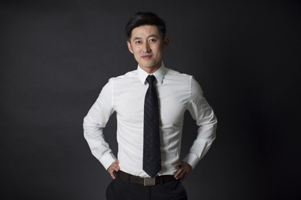
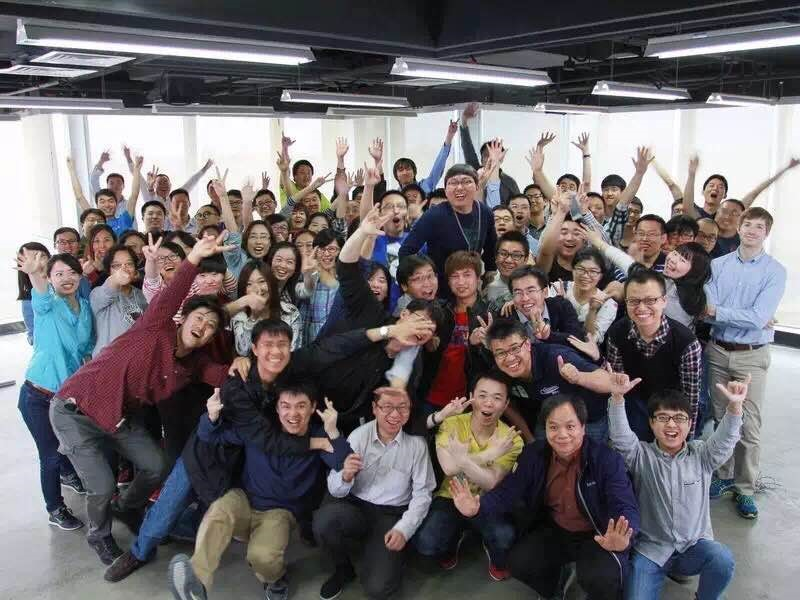

零零无限科技有限公司致力于打造具有世界级领先水平的人工智能硬件设备以及机器视觉与计算机高精控制的解决方案。 公司总部位于北京，并在杭州、深圳、美国硅谷设有办公室。公司创立之初就得到了来自IDG、金沙江创投、真格基金、ZUIG等知名企业的风险投资。
Hover Camera 是由零零无限开发的全球第一台悬浮自拍无人机,便于携带且简单易用,更能实现自动跟拍。Hover Camera相关产品视频在全网产生了 2000万次播放量。截止目前，有数万美国和中国用户在官网申请产品预约。

目前我们计算机视觉组的成员分布来自于浙江大学，西安交通大学少年班，华盛顿大学等等，秉着只招一流人才的原则，我们的每个成员都是全能型选手，目前完成了大量无人机相关的算法，包括光流算法，eis算法，slam算法，目标检测于跟踪等等，在这里，你将能和各路一流人才一起工作。无畏&&专注，加入我们，和我们一起改变世界！
王孟秋，北京零零无限科技有限公司创始人兼CEO。人工智能研究领域科学家，社交网络及大数据系统行业专家。美国斯坦福大学计算机专业博士，毕业于斯坦福大学人工智能实验室，美国卡耐基梅隆大学计算机硕士。曾在阿里巴巴担任数据科学家职务，也是Facebook及Twitter等硅谷著名SNS公司的早期员工。在机器学习，自然语言处理等领域发表国外顶级期刊及会议论文数十篇，并曾获得全美人工智能学会（AAAI）优秀论文及最佳工程奖。
这支你未来可能会加入的团队，现阶段有百余名队友，团队集结了斯坦福，麻省理工，厦门大学、航天五院，八院以及众多世界五百强企业资深技术专家作为研发核心团队。在这里，每个你看到或偶遇的同事，都有各种闪光点等着你去挖掘。
